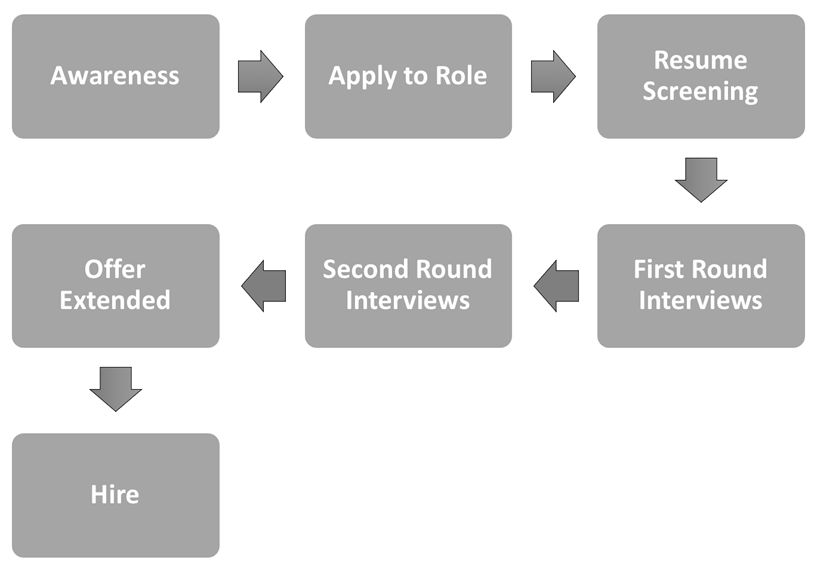

Chapter 30
At least I could appreciate the irony in the situation. Here I was, having conducted dozens of interviewer trainings, yet my own process just felt too chaotic and random. I (Gayle) certainly didn't seem to be following the advice I'd doled out to thousands of people.
My phone screens especially seemed inefficient. In some cases, I'd discover minutes in that they didn't hit basic qualifications; why am I not discovering this before the phone call? Even with the good candidates, I wasn't sure if I was appropriately evaluating them vs. being biased by those I "clicked" with.
In my defense, this wasn't exactly a dev or PM job—my specialities. No, instead, I was hiring a nanny for my two sons. But it's all the same, right? (Sort of.)
As I'd instructed thousands of attendees at my trainings: "All interviewing, of any type, is about two things: signal and the candidate experience." Yes, my nanny interview process needed to look at least a bit more like a tech hiring process.
I fixed up and formalized my process. From now on, candidates got a screening questionnaire and a write-up about us and the job. If there was a mutual fit, we'd hop on the phone for a structured call evaluating communication, problem solving, and design.
Okay, I'm half-joking about the "problem solving and design" signals—but only half. Coincidentally, the signals I needed to assess were somewhat parallel:
The onsite interviews? Those were a different story. I like to step out of the way to see how the nanny and my kids connect. And, for better or worse, that gave my six year old the opportunity to step right into my shoes.
"Please read this to me," my son said, handing the surprised candidate a book moments after her arrival.
Halfway through the book, he announced that she can stop reading, because it was time to do art. Apparently, she'd passed the reading assessment, but he wanted to make sure they had time for the art assessment and running assessment. If only all interviewers kept to such a rigorous schedule!
"Well, what did you think?" I asked him after she left. He thought for a moment, "I'd give her a 7 out of 10." Evidently, he'd invented a numerical grading system too.
Perhaps he'd listened in to too many of my work calls, but what he intuitively understood was that interviewing is not just about figuring out if you like the candidate. It's about assessing what you need—separating what's trainable from what's not—and then assessing candidates based on those signals. Structure will help you do these things.
The recruiting process has a funnel that's almost exactly like the marketing funnel, except instead of going from awareness to purchase, it goes from awareness to hire.

A company can focus on improving the conversion rate between each stage, but even in a well-running funnel, you need to put a lot of time and energy in. It takes on average 55 well-qualified candidates to hire a single PM. 1 If you get a response rate of 20%, you might need to reach out to 275 people to hire one PM.
When you're recruiting, consider approaches that help you find good people, and those that help good people find you. For the first category, you can search job sites, ask for referrals, attend career fairs, and reach out to people you admire. For the second category, you can build your own reputation through writing, networking, hosting events, or speaking at conferences.
Evaluate candidates fairly and effectively ⚡
As a hiring manager, you need to decide what you're looking for, and come up with a process to measure those qualities. You need to decide on your risk tolerance since hiring someone bad is very expensive, but sometimes taking a risk can pay off.
You need to ask, prompt, and evaluate questions consistently across candidates to get a clear, calibrated signal. It takes practice to get beneath the surface of rehearsed answers.
Interview processes are covered in more detail in "Designing a PM interview process" in Chapter 30 .
Source and refer a lot of candidates ⚡
Referrals—when an employee suggests a friend, past colleague or other connection—are great. They offer extra bits of information on the candidate, and with potentially little effort on your part. What could be better?
Unfortunately, you can't rely exclusively on referrals for long. You just won't get enough candidates, and you'll miss out on so many great ones.
It turns out that many PMs are happy enough at their current job, but willing to make a switch for a great opportunity. Your job is to convince these "passive" candidates that your role is a great opportunity for them. If you reach out to a person when they're starting to feel antsy, you might be able to hire them before they're officially on the market. When you reach out to people you don't know, it's called sourcing.
Recruiting is a numbers game, and personal outreach works.
Many people will agree to a casual introductory coffee chat, even when they're not actively looking for a new job. With practice, you can generate active candidates out of those chats. Try setting a target for how many introductory meetings you want to have every week.
While you can't automate your meetings, there are ways to optimize outreach. You can use templates, mail merge, or let recruiters send messages from your email address. If recruiters are sending on your behalf, make sure you approve the message and double check the lists to make sure they don't accidentally reach out to someone you know.
If your network isn't very diverse, you can intentionally dedicate some sourcing time towards underrepresented candidates by, for example, reaching out to groups like SWE (Society of Women Engineers) or NSBE (National Society of Black Engineers).
If you're feeling shy about reaching out to people, here are some templates you can start from. Adapt them to match your voice:
It's great to cast a wide net, but also be sure the role is relevant to the candidate. Don't reach out to a senior PM about an entry-level job.
Learn how to successfully pitch candidates ⚡⚡
As a manager, you need to convince people to join your team. This is basically a sales pitch, where the thing you're selling is the role. This can happen early on, when you convince a passive candidate to interview, or at the end of the interview process, when you try to convince someone to accept your offer.
Many PMs start out uncomfortable with the idea of pitching. They might have an image of pitching that sounds "sales-y", inauthentic, or boastful. Luckily, good pitches aren't like that.
In a good pitch, you learn what someone cares about and then talk to them about how the role matches. You let your genuine enthusiasm shine through. You can be honest about the downsides of the role while sharing why they weren't dealbreakers for you.
Here's an example of what a good pitch could sound like.
Employee: Thanks for talking to me today. I know you're not actively looking, but I'd love to learn a little about you and what you'd be looking for in your ideal role.
Candidate: Well, I love my job, but I sometimes think I'd learn more and have more impact at a smaller company.
Employee: That makes a lot of sense, and is a big part of the reason I came here, too. I love that I get to meet our customers and hear directly from them how much our product has helped them. And, we only have three PMs so each person owns a large part of the product. In terms of learning, we have regular learning-lunches, but I think where I've learned the most is in the weekly Q&As with the founders.
…
Employee: Is there anything else I can tell you about the team?
…
Employee: How are you thinking about this role compared to your other options?
Candidate: I like it, but I'm wondering if I'd rather work on a consumer product that my friends and family use.
Employee: That makes sense. The way I think about it is that our customers are really under-served, and so we're able to make a big difference in their lives. If we weren't building this product, they'd be stuck with a much worse alternative. I love getting to have that kind of impact.
During these chats, you might end up getting some signal (see Signal) that the candidate isn't a great match for the role. It's okay to be honest when the role doesn't seem like a fit. In fact, being candid about the reasons not to take the job can be an effective technique because it shows that you're willing to be honest. It's much better for them to turn down the role than to accept it and leave three months later when they realize they were misled.
Put a personal touch into closing candidates ⚡⚡
When it comes to closing candidates, the best approaches are personal. You need to understand what each candidate values.
Compensation is obviously a huge factor, but there are many other things people take into consideration when making their decision. They care about the company's chances for success, how fast the company is growing, and how they feel they can learn and grow. They also look at how interested they are in the product, whether they like the team, and how they'll fit in.
One of the most effective things you can do for closing a candidate is to reach out personally and have other team members reach out as well. Let them know that you liked them and want to work with them. You might even invite them to spend more time with the team or send a personalized gift based on an interest they mentioned during the interview.
When it comes down to it, the people you work with on a day-to-day basis have a huge impact on your happiness. It helps to let them get to know you and your team so they can get a sense of how much they'd enjoy working with you.
PM Archetypes: Builders, Tuners, and Innovators
Sachin Rekhi, the founder and CEO of Notejoy, developed a set of three PM archetypes that can be helpful when building a team. 2
Different teams will need different types of PMs. When you start the hiring process, think about which archetype will best fit your needs.
Optimizing for Signal and the Candidate Experience
Interviewing—not just for PMs, but for any role—boils down to two goals: signal and candidate experience. That is, when we think about how many interviews to do, which employees should interview, what questions to ask, and what processes to put in place, we want to optimize for signal and for the candidate experience.
Signal is the information that we learn about the candidate—the adjectives , more so than facts . "Signal" might be that they show initiative, have strong work ethic, or are insightful about users. Notice that all of these things exist on a spectrum; signal is rarely a binary attribute.
We extract signal by analyzing the candidate's work experience, their responses to questions, and the way that they act, and other "facts." We look at what they did or said, and ask ourselves (and often them), why? We go deep to learn the signal:
Let's see this in an example.
Note how what started off as "candidate won't prioritize the user" morphed into "this candidate can prioritize the user."
Probing deeper is a very important skill, both in your interviews and in debriefs. We rarely want to take a candidate's first response as-is. We need to ask follow-up questions to understand why they did this so that we can then assess what it says about them.
As you construct your interview process, or reflect on whom you want to hire, think about the signal. What are the core signals you'd like to assess? These items might include traits like "data analysis" or "stakeholder management."
Generally, it's useful to have a list of five to seven core signals. If your list gets much longer than that, you'll have trouble finding a candidate who can fit those—or you'll have to drop your standards on some of the criteria.
The candidate experience is about how the candidate experiences (i.e., reacts to, interprets, feels about) the company, the people, and the interview process as a whole. In a sense, it's the flip side of signal. Whereas signal is what the company learns about the candidate, the "candidate experience" is what the candidate learns about the company.
Certainly, happiness—whether the candidate liked the people and the process—is a big piece of this, but it's not the entirety. For example, if the candidate thinks their interviewers were kind but unskilled, that's not really a "good experience." The candidate will not walk away saying, "this is a company I want to work for."
The candidate experience impacts:
A good experience means that candidates walk away saying that the people, process, and questions were organized, fair, and likable. These aspects can overlap. For example, a lack of transparency in the process can make the process seem unfair and disorganized. 4
Evaluate your interviewers, questions, and process with these elements in mind:
The candidate experience extends to rejections as well. No one wants to hear that they were a poor communicator, and if you're telling someone they weren't technical enough for the role, it had better be unarguable. If recruiters will be giving feedback after the interview, stick to facts such as which interviews they scored lower on, rather than comments about their abilities. 5
An effective process builds the right team at a reasonable cost. More specifically, this means:
In the previous section, we discussed the goals of signal and candidate experience. Better signal improves false negatives and false positives, and, therefore, cost effectiveness too. A better candidate experience primarily impacts cost effectiveness; if candidates don't like us or our process, it will take longer to find someone who accepts our offer.
Many companies will say that false negatives are better than false positives, and they design their process accordingly. That is, they would rather their process errs toward rejecting good candidates than accepting bad ones. Generally, the harder (or riskier, or more disruptive) it is to fire an underperforming employee, the more cautious you will want to be about false positives.
Designing a PM interview process
If your company doesn't already have a great process for interviewing PMs, you might need to set one up.
In general, you'll need to consider how each step of the process affects false positives, false negatives, and the amount of time your team spends on interviewing. You'll want to think about what the core signals are, and how you'll create a good candidate experience.
Your interview process can be a competitive advantage, if done well. It can enable your team to recognize and hire talented PMs that other companies missed.
Here are some guidelines on how to design a PM interview process.
Align on what you're looking for in a PM
Product management is fundamentally a whitespace role, so the skills you need will depend on the strengths and gaps on your existing team. It's important to discuss your goals so you can recruit the kind of PM you need.
Include the people who will be interviewing and working with the PM, so that everyone will be aligned. PMs do best when the people on their team really want them there, so it's important to have buy-in.
Here are some questions to consider:
Be careful about putting too many things on your list. The more attributes you look for, the more your candidate pool shrinks. Something has to give. Usually, that will either be your time or your standards.
Identify qualities that are hard to teach (and therefore need to be assessed in the interview)
Managers, ask yourself a question: What's a reasonable "ramp up" time for a new employee? That is, when you hire a new PM, they certainly won't be productive in the first week. How long should it take for them to be really up and running? 7
Most people say something in the range of four to twelve weeks. Great!
This means that if there is an important skill, but you can train someone on it in less than a month or two, then there's no need to look for this in a candidate. Broaden your pool, hire a better candidate, and train them (see Teach your mentee about the company and product in Chapter 25) .
If a candidate has never run an A/B test, but has strong analytical skills, they can learn the basics quickly. They might not immediately see that the control side rules out differences based on seasonality, but that's an easy concept to learn. If they haven't heard of a minimum viable product, but they're good with prioritization, they'll figure it out. Don't hire on what you can train!
One interesting implication of this is that a job opening should rarely require "basic skills." If a skill is basic, it's usually learnable. Therefore, it shouldn't be required for the job; just teach the new employee the skill. If your interview questions build on the basics, let candidates know in advance which concepts you'll be covering so they can learn them before the interview. You'll get better signal when you give candidates a chance to be prepared. 8
On the other hand, mindsets and what types of information a person notices can't be picked up quickly on the job. A person could develop these over time if they wanted to, but as a hiring manager, I wouldn't count on them improving quickly if they don't already have them. This includes customer empathy, awareness of good design, product intuition, product mindset, learning mindset, perseverance, collaborating well with people, effective communication, being detail-oriented, and grasping complex concepts quickly. If you need employees with these traits, you'll want to assess them during the interview.
In the middle are a bunch of skills that can be honed with on-the-job experience, but they take time and mentorship. These are skills where you could read a book to pick up the basic tips, but there are so many nuances and complexities that you won't be able to figure out which tip to apply until you've been through it a few times. There are also skills where it's easy to learn what you "should" do, but it's scary enough that most people won't do it until they've been burned a few times (like learning to show your work early). This includes a lot of the PM processes; working with engineers and designers in a sprint cadence, writing specs, leading cross functional meetings, and pulling ideas together into a compelling strategy.
If you've got experienced PMs eager to mentor, you can build a great team by adding in high potential people who have less PM experience, such as new grads or people who want to transition to product management.
Put together an interview process that tests for all of the skills, experiences, and traits that you're looking for
Map out each requirement to the interview steps where you'll get some signal on it. Some requirements are important enough to assess in multiple places.
For example
Resume review and cover letters
For senior roles, this is often a quick scan to see if they actually have the experience you need. For junior roles, however, there's a wealth of information you can evaluate at this stage; communication, leadership, product-like experience. Be very careful about unintentional bias—if you require an ivy-league degree, you'll be skipping over a lot of talented folks.
One way to evaluate resumes is to create a list of "signs of excellence" that you care about and require one or two of them to advance. Some examples include a good GPA, experience as a teaching assistant, experience as a residential advisor, varsity sports, entrepreneurship, student leadership, fellowships, a great c over letter, attending a top school, or experience at a top company. 9
Take-home assignments are controversial. The people in favor of them say that they're more representative of real PM work than a high-pressure interview and that they allow a company to widen the net to consider candidates without elite credentials. The people against them say it's unfair and biased to ask for unbounded amounts of "free work," especially when some candidates might have gotten outside help on the assignment.
If you choose to use a take-home assignment, here are some things to be mindful of:
Take a look at all the pros and cons and decide if it's worth it to include a take-home assignment in your interview process.
An intro presentation is a great alternative to having each interview start with "tell me about yourself." It could range from a 15-minute simple intro for APM candidates, to 45 minutes discussing past projects for experienced candidates. You can adjust the prompt to cover any particular area you want to hear about.
The presentation gives the candidate a chance to shine and lets the 1:1 interviewers manage their time better.
Be aware that very junior candidates, in particular, might have weaker public speaking skills due to a lack of experience. If public speaking is important to the role, it's okay for that to be a factor. But also recognize that this is also a skill that a candidate can significantly improve in with practice—particularly with the company's support.
These are questions like "Can you tell me about a product you like?" or "How would you improve Google Maps?" They can be a little scary to ask because the answers can really go in any direction. It can also be difficult to think of follow-up questions on the spot or to know if their idea is actually good or not.
To help with this, plan your prompts and follow-up questions ahead of time. Pay attention to time and make sure to steer the interview to touch on all the important areas you want to cover—for example, getting them to draw on the whiteboard. If you feel you're getting an answer that's too rehearsed, you can ask them to come up with another product or idea.
One skill to test for in these questions is "Can you design for someone who is different than yourself?" To get at that, you can ask the candidate to design a product for a specific group of people, such as an alarm clock for the blind, Uber for kids, Photoshop for the elderly, Spotify for truck drivers, and so on. People familiar with the group will have an advantage that can be misleading, so beta-test your questions to ensure it doesn't require specialized knowledge to answer well.
To test product mindset, you can either prompt the candidate to think about goals (for APMs), or see if they come up with goals unprompted (for senior candidates). If the candidate asks you what the goals are, spin it around on them and ask them what they think the goals should be. If a candidate is resistant to setting their own goals or has a lot of difficulty, that's a sign they don't have a product mindset.
Once the candidate starts coming up with actual solution ideas, you can see if those solutions tie back to the goals. When you ask them to prioritize, do they choose the things that help the most with the goals? If they get drawn to the sparkly idea and can't articulate why it's better than the impactful ones, that's a sign they don't have a product mindset.
The best questions for assessing analytical problem solving are hypothetical scenarios inspired by real experiences from your company where analytical skill was important.
Here are some examples of real-world experiences that can lead to good questions:
Make sure to test your new analytical question on PMs you respect to ensure it's not a trick question, and also to start calibrating yourself on different approaches. Sometimes the key insight appears obvious to you in hindsight, but is tough to spot in an interview. Your question should let you evaluate a person's problem solving process, not require an "aha" moment.
Behavioral questions ("Tell me about a time when…")
A tricky thing about product managers is that it can be very hard to separate out their contributions from the rest of their team. They might have gotten lucky and been put on a great team, rather than really driving the success, or vice versa.
With behavioral questions, you can start to really dive in to figure out the scope of their responsibilities and what their unique contributions were. You can talk about alternatives they considered and what kind of resistance they faced to get a fuller picture of the situation.
You can learn about product mindset by asking how a past project got started and why they made various decisions. If they helped shape the goals (not just setting numeric targets or specific measurements, but actually deciding which problems to go after) and made decisions to support those goals, that's a strong sign that they have a good product mindset. If they've only ever picked obvious goals, or if their reasons were "I wanted to try this new technology," they might not have a product mindset.
As you ask these questions, keep "signal" top of mind. What are the core attributes you want to measure? Ask a question that helps you evaluate that, and then keep probing deep until you get there.
Soft skills can be evaluated implicitly or explicitly.
Be careful here. It can be helpful to challenge the candidate in some way, but you want to be sure that you stay friendly and supportive as you do this.
Many PM interview questions can accidentally become trick questions. A candidate thinks you're testing their analytical skill but actually you were looking for customer focus. These trick questions can cause you to falsely assume a candidate doesn't have a skill, just because they interpreted your question incorrectly.
One way to avoid misinterpretations is to tell them up front what you're looking for in the question: "I'm trying to get a sense of how you debug problems." Another way is to carefully frame the type of answer you're looking for: "What questions would you ask to decide what to do?" instead of "What would you do?"
Some interviewers employ a "trick" where they hide key information in framing the question to assess whether the candidates will ask questions before diving into problem solving. This is challenging and can often backfire; people act differently in an interview setting, especially when they are guessing you want them to jump in or if they're afraid to appear rude to the interviewer.
So, how can you find out if the candidate asks questions appropriately? Try framing the question with the role you're playing. Instead of "How would you build <feature request>" say, "Imagine I'm a salesperson and I ask you to build <feature request>" and choose a realistic scenario where it would be important to ask questions first. Another way to learn if they ask questions is with a direct behavioral question, such as, "Have you ever had a time when what people asked for didn't end up being what they wanted? How did you figure it out?"
Write up rubrics for your questions
After you have your list of questions, a great way to ensure fairness is to write up a rubric for grading the answers. This makes it much faster to decide how someone did on the question, and helps calibrate across multiple people asking the same question.
Sample Rubric:
|
Good |
Bad |
|
|
Comes up with at least three distinctly different ideas. |
All ideas are simple variants on the same theme. |
|
|
Design |
Demonstrates the value of the product early on. |
Forces the user to fill out too much information before getting into the product. |
|
Collaboration |
Is thoughtful about the interviewer's questions and pushback. |
Gets defensive when questioned on the design. |
Don't let your rubric get in the way of analysis, though. For example, you might like three different ideas, but did you give the candidate the opportunity to do this? Analyze what the candidate did, and why. Perhaps the candidate's ideas were all variants on the same idea because of how you led them down a particular path.
1 . The qualified-candidate-per-hire for product manager comes from https://resources.workable.com/blog/qualified-candidates-recruiting-metrics . The same site provides other statistics too.
2 . https://www.sachinrekhi.com/3-types-of-product-managers-builders-tuners-innovators
3 . The ones you hire are your employees, and somewhat less likely to post negative things online about your company. In that sense, the candidates who aren't hired (either because you didn't extend and offer or they didn't accept the offer) are the ones who form the "word of mouth."
4 . In fact, when a company isn't explicit about how the interview process works, it's often because they are disorganized. They don't tell the candidate what to expect during the process because the company doesn't know yet; they're just figuring it out on the fly. And that is not a good thing.
5 . Most companies do not give any feedback after interviews, but most candidates really appreciate feedback when it's a gap they can work on.
6 . I (Gayle) once was consulting (to optimize the hiring process) for a company where 90% of their candidates passed the phone screen, after which the successful candidates did a five hour onsite interview. Essentially, they spent one hour on the phone to save themselves, on average, 30 minutes later. Their process would be "cheaper" if they skipped the phone screen entirely!
7 . Yes, you should ask yourself this question with each job opening!
8 . There is one caveat here. Sometimes, the lack of the skill isn't a problem, in and of itself. But the fact that this candidate lacks it, given their background, could be a red flag. For example, you could be concerned if a senior PM didn't know what an A/B test was, even though they could learn it. What other basic knowledge are they missing?
9 . Be mindful of unintentional bias here. Students from privileged, educated families have the resources to support top schools and the networks to teach them how to write great cover letters. This is one reason why it's important to keep an open mind about how someone can demonstrate excellence, rather than requiring one specific way.
10 . Beware of accidentally putting some candidates at a disadvantage. Someone with more close friends who are PMs will have an advantage if they're allowed to ask their friends. This might end up favoring younger, male candidates, who are more likely to have tech-focused social circles.